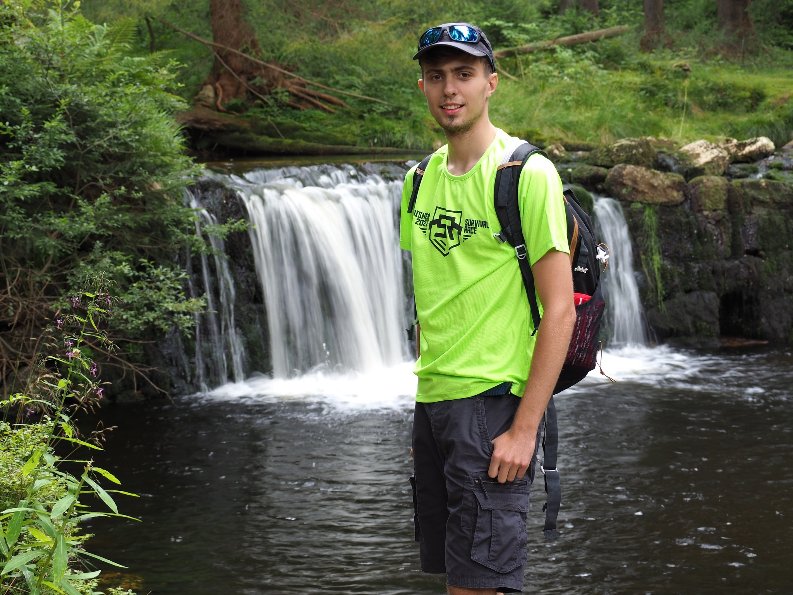

Who am I?
My name is Bartek, I’m 18 years old and I live in Poznań, Poland. I’m currently studying at Technical School No. 19 in Poznań, where I’m pursuing a degree in IT (Information Technology). I’m also a scout, which has taught me a lot about leadership, teamwork, and responsibility. In my free time, I enjoy exploring my interests, which include technology, automotives, and outdoor activities. I’m always eager to learn new things and take on new challenges.
